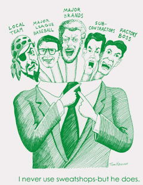

“Made in the USA” and double-breasted baseball apparel manufacturers
Submitted on Wed, 03/14/2007 - 7:48pm
“Made in the USA” and double-breasted baseball apparel manufacturers

Posted below is a recent press release from UNITE HERE about the factory they represent in PA that sews the on field playing uniforms for the players. This is an example of one unionized factory being used to market the products being made in thousands of mostly sweatshop factories. Baseball is using this factory and the CWA represented New Era shop in Up State NY, as examples of typical factories where baseball apparel is sewn. It is a very intentional PR spin designed to trick consumers, divide workers outside of the United States and anti sweatshop activists from the mainstream US labor movement.
In a recent letter to SweatFree Communities Executive Director Bjorn Claeson, MLB lawyer Ethan Orlinsky suggested that MLB’s relationship with Majestic and New Era should be “trumpeted” as a success story. Never mind that they are both double-breasted companies with the vast majority of production done outside of the reach of independent monitors and without unions.
These double-breasted apparel manufactures are popping up everywhere, making pitches to the anti sweatshop movement and expecting us to fall into line and promote their products without seeing the transparency of their operations. American unions continue to demonstrate just how tempting it is to blanket themselves in “Made In the USA” language, ignore union label strategies, and not protect workers in other parts of the world working for the same companies (or sub-contractors) and doing the same work for pennies on their dollars. “We got ours. Can’t you anti sweatshop activists understand how afraid we are of plant closings?”
Workers, Clothing Giant Strike Deal to Keep Major League Uniforms Made in USA
Five hundred manufacturing jobs will stay put at the Majestic Athletics apparel plant, thanks to a deal struck by UNITE HERE and VF Corp., who recently acquired Majestic. The agreement ensures that VF Corp. will continue operation in the area, employing 500 workers who have for years produced all official Major League Baseball uniforms.
"Making the uniforms here is a tradition that our community, Pennsylvania, and Major League Baseball can all take pride in. And we are so glad that it will continue," explained Gail Meyer, associate manager of the Pennsylvania Joint Board of UNITE HERE.
"We can keep making great uniforms for America's pastime, and players and fans can take heart knowing that the game is still played in apparel crafted by productive American workers. It's a homerun for all of us."
Under the deal, job security for workers is certain until June 2010, when their current labor contract expires. It also includes wage increases and continued health benefits. Workers at seven Lehigh Valley locations are covered by the contract.
###
This kind of material, written in tight coordination with MLB PR spinners, demonstrates just why it is so important that anti sweatshop activists respond in force at Union Solidarity Night @ PNC Park on April 14, 2007.
On that night the Pittsburgh IWW will be releasing a report containing the data collected from fan’s apparel all over the country. If you have any baseball shirts or hats or bobble heads, please take the time to write down the name of the company, country of manufacture, 6-digit RN number, the team logo, and the place where you purchased it. Send it to Pittsburgh IWW, PO Box 90315, PA 15224.
Members of the Pittsburgh Anti Sweatshop Community Alliance are still hopeful that the language coming out of shops like New Era and Majestic will change and that the anti sweatshop movement, more importantly, a global apparel industry union organizing drive, will become an instrument of empowerment for workers to deal with plant closing threats. Maybe a group like the Coalition of Labor Union Women, which has a strong internationalist constitution, can play a role. It is our understanding that UNITE HERE is affiliated with the International Textile, Leather and Garment Workers Federation along with the National Garment Workers Federation of Bangladesh, who also sew Major League Baseball apparel.
There are ways to move forward. This is not deadlocked. Groups like United Students Against Sweatshops and SweatFree Communities have an obligation to confront issues and exacerbate points of contention so that we can move forward aggressively with our support for a global apparel union organizing drive. It is necessary for our teams and schools and communities, the consumer markets for the global apparel industry, to play a pro-active role in the discussion about “Made in the USA” sales tactics. We’ve got to talk it out openly with the unionized apparel industry workers in the United States.
This anti sweatshop activists does understand how afraid manufacturing workers are of plant closings. Plant closings are the #1 characteristic of the US labor movement and Western PA in my lifetime. It is time to look at some new strategies to deal with the threat of plant closings. The anti sweatshop movement and workers in other countries have much to offer. The prize here the first real global union organizing drive and the basis of moving forward must be empowering one another with a solidarity strategy to keep work where it is right now. This is what the Pittsburgh Anti Sweatshop Community Alliance means when we discuss a “multi fiber freeze” or when student activists talk about “volume controls.”
“Made in the USA” and public relations cooperation with double breasted companies will continue to be explicitly used as wedge between US manufacturing workers and their global counterparts until we are able to envision solidarity strategies to stop plant closings. It is the role of students and anti sweatshop activists to point this out ask for more creative approaches from organized labor at every opportunity. Change is not taking place from with-in the unions and we do not see progress that would make us think that this will change without our intervention.
During his all-too-short lifetime, the Rev. Dr. Martin Luther King Jr. worked tirelessly for equality. Today, we celebrate that legacy. The labor movement is a logical heir to accomplish what Dr. King fought for his entire life. He worked closely with labor unions throughout his career and was, in fact, assassinated while supporting the rights of striking sanitation workers in Memphis, Tennessee in 1968.
While America today honors the many
accomplishments of Dr. King, others are attempting to turn back the clock. Take,
for example, Buffalo, New York-based New Era Cap. New Era is Major League
Baseball’s exclusive maker of baseball caps, and a staple in hip hop gear.
Dr. King dreamed of a land free of bigotry
and discrimination, but New Era workers in Mobile, Alabama, still live the
nightmare of racial discrimination. Last year, in an effort to address
poverty-level wages and unfair treatment, New Era Cap workers in Mobile turned
to the Teamsters to organize a union.
Workers, the majority of whom are black and
female, were being passed over for promotion and were paid less than white
workers. Management was disciplining single mothers when they took time to take
their sick children to the doctor. As the workers stood strong in organizing
their union, standing up for their civil rights, the company retaliated by
launching a fierce anti-union campaign that included bullying and
intimidation.
On Monday, while millions of Americans
across the country reflect on Dr. King’s legacy, New Era Cap managers should
reconsider how they treat their predominantly black work force in Alabama. It is
unfortunate that, in a state that has made so much progress since the civil
rights struggles of the 1960s, a few racist managers can continue to give the
state a bad name.
The Teamsters will continue to fight for the
civil rights of these and other workers who are similarly mistreated. Dr. King
would do the same. He always believed the labor and civil rights movements were
on the same page.
In talking about the civil rights movement,
he once said, “Our needs are identical with labor’s needs: Decent wages, fair
working conditions, livable housing, old-age security, health and welfare
measures, conditions in which families can grow, have education for their
children, and respect in the community.”
Please help us meet these goals for New Era
workers. You can send an email to the CEO of New Era by going to http://www.teamsterstakeaction.org/campaign/newera2.
In addition, The Teamsters, with United
Students Against Sweatshops, will march in the NAACP’s Martin Luther King Day
memorial parade in Mobile. Union members and officials will be in the presence
of fellow workers, civil rights activists and students. Between their physical
presence and our Netroots letter-writing campaign, the CEO of New Era will hear
us all.
Students Against Sweatshops, Worker Rights Groups
Join in Call for Reform
November 3, 2007
(Washington, D.C.) – Teamster members protested Friday and today at New Era
Cap stores in Atlanta, New York City, Buffalo, London, and Toronto. The
protesters called on New Era, one of the country's leading baseball and urban
fashion cap manufacturers, to end discriminatory practices and ongoing
violations of workers' union rights at its facility in Mobile, Alabama.
United Students against Sweatshops, community groups, and labor advocates
here and abroad joined in the protests. Passing out flyers that said, "Some
things don't fit in a New Era Cap," the protesters said they want to alert
customers to the racism and intimidation the Alabama New Era workers face.
"It's time for a new day at New Era," said Jim Gookins, Teamsters Local 991
Secretary-Treasurer. Local 991 is the bargaining representative for the 111
workers who voted last July to join the Teamsters.
Black workers at the Mobile plant with years of experience have been passed
over for promotion in favor of white workers. All but one manager at the Mobile
plant, out of a management/administrative staff of more than 20, is white.
"When workers wanted to address this discrimination by forming a union, New
Era management used every means in its power to bully them out of a free choice.
Management ran a systematic intimidation campaign. They even told workers that
workers would jeopardize their food stamps by voting for a union.
New Era's bullying and racism is not the behavior American sports fans
expect from the company that makes their teams' caps. Sports should be
colorblind. New Era has shown that it is not." Gookins said.
"Our demands are simple and just," said Felicia Walker, a union activist
and former New Era employee, who was among more than 20 workers fired from the
Mobile facility during the course of the union campaign. "We want New Era to
reinstate the fired workers, and to give black workers a fair chance to compete
side by side with white workers for promotions and job assignments."
The union has received reports that conditions at the Jackson, Alabama New
Era plants are even more repressive and harsh than those at the Mobile facility.
Several workers have told the union that sweatshop-like conditions are prevalent
in the Jackson facility.
"With these actions, we are calling New Era to end the racism and
repression of a bygone era and live up to the values its customers trust this
company to honor," said Teamsters General President Jim Hoffa.
New Era Cap is the manufacturer of Major League Baseball official caps, and
for a number of NBA, NHL, and collegiate teams. The company also makes popular
caps for hip-hop fans.
Founded in 1903, the Teamsters Union represents more than 1.4 million
hardworking men and women in the United States and Canada.
Contact: Galen Munroe (202) 624-8730